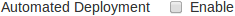
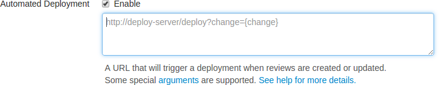

How can I automatically deploy code within a review?
Deploying code in a code review automatically involves enabling Automated Deployment in your project's configuration and providing a trigger URL. When the trigger URL is requested, Swarm expects a deployment program to be executed.
When the deployment processing ends, Swarm expects either a
success callback URL or failure callback
URL to be requested by your deployment program. These
callback URLs should include a url parameter (either
via GET or POST); when a valid-looking URL is included, clicking the
deployment status indicator directs the user to the specified URL. This
is intended to facilitate easy viewing of the successfully deployed
review, or a report indicating why the deployment failed. The
url parameter is mandatory for successful
deployments, but is optional for failures.
-
Visit your project page.
-
Click . The Edit Project page is displayed.
-
 Click the checkbox next to Automated Deployment to display the Automated Deployment configuration fields.

-
Provide a URL that triggers your deployment execution.
Special arguments are available to inform your deployment program of various details from Swarm:
-
{change} -
The change number.
-
{status} -
Status of the shelved change, shelved or committed.
-
{review} -
The review's identifier.
-
{project} -
The project's identifier.
-
{projectName} -
The project's name.
-
{branch} -
The branch identifier(s), comma-separated.
-
{branchName} -
The branch name(s), comma-separated.
-
{success} -
Deployment successful callback URL.
-
{fail} -
Deployment failure callback URL.
-